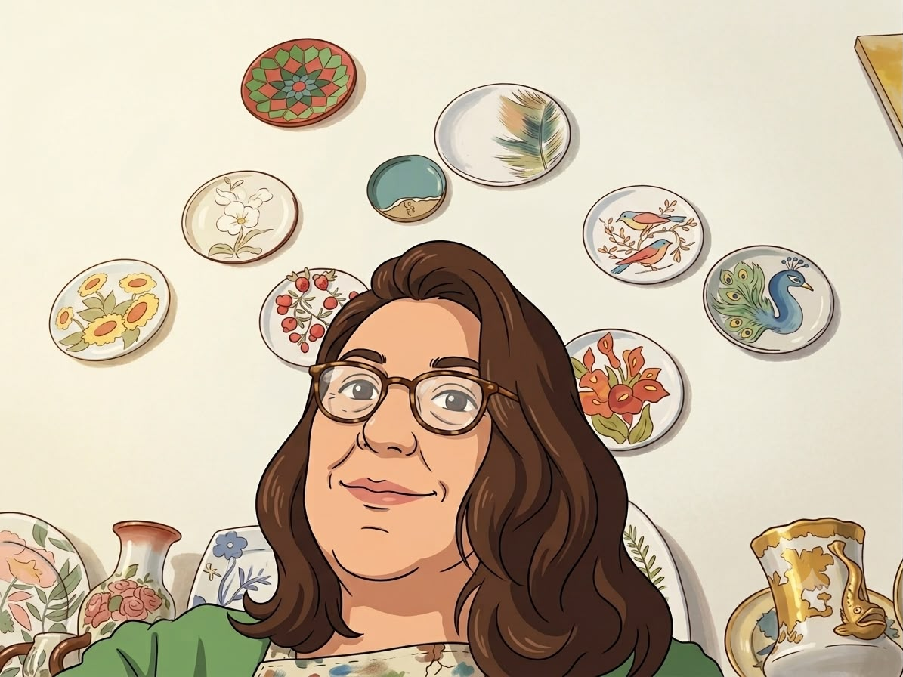

Explore Nossas Coleções 🤎
Procurando algo sob medida? Encomende sua peça única →
Queridinhos do Ateliê ❤️
Cerâmica no Seu Café da Tarde 🤎
Crochê Artesanal 🧶
Nossa coleção de crochê está chegando
Peças feitas ponto a ponto, com o mesmo cuidado artesanal da cerâmica — em breve aqui na vitrine.
Saiba mais
Quem Somos
A Anasor Sobreira nasceu da vontade de levar o feito à mão para dentro de casa. Cada peça de cerâmica é torneada, esmaltada e queimada no nosso ateliê, e cada trabalho de crochê é montado ponto a ponto com fios naturais.
Trabalhamos em pequenos lotes, então nenhuma peça é exatamente igual à outra — as pequenas variações são a assinatura do artesanal.
Ficamos no Rio de Janeiro e enviamos para todo o Brasil.
Um olhar dentro do ateliê onde cada peça ganha vida
Frete Grátis
Pagamento Seguro
Feito à Mão
Suporte via WhatsApp
Fale com a gente
Dúvidas sobre uma peça, encomendas personalizadas ou parcerias — ou deixe só nome e e-mail para receber nossas novidades e promoções
📱 WhatsApp: (21) 98722-2679
📧 E-mail: contatoatelieanasor@gmail.com
📷 Instagram: @anasor.ceramica
📍 Rio de Janeiro – RJ · Envios para todo o Brasil